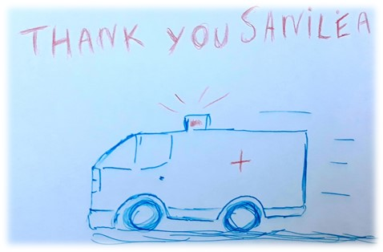

Aujourd’hui Sanilea se désigne comme un chainon essentiel de l’écosystème du transport sanitaire. Regroupé différant réseaux de transport et centres médicaux cette plateforme est une preuve directe d’importance de domaine informatique à aider et facilite les choses ce qui est identique pour presque toutes les autres plateformes mais sanilea est spéciale parce que son intervention participe d’une manière ou une autres à sauver des vies c’est une application directe ou même une collaboration entre le numérique et notre vie quotidienne. Ainsi sanilea depuis sa construction en 2013 par deux professionnels de télécommunication David CHIRON et Fabien SOARES a connait un fort développement et même une révolution dans le domaine car il faut soulignés bien que cette plateforme est créée lors d’utilisation des méthodes traditionnelle et sur tout dans le domaine de transport sanitaire et qu’un peu des donnés sont digitaliser à l’époque C’étaient les soignants eux-mêmes qui veillaient à prendre contact avec les ambulanciers. En fin, on trouve que cette entreprise est à nos jours affirmer comme leader du secteur.
Sanilea a connu une croissance forte. La société se structure autour d’une équipe jeune et dynamique de 60 personnes. La division phare de Sanilea reste son pôle R&D constituée d’ingénieurs hautement qualifiés ayant cinq axes de travail : Simplicité, connectivité, intuitivité, mobilité et accessibilité. La vision et stratégie de travail joue aussi un grand rôle dans la croissance et succès de cette société car par exemple on trouve en 2019-2020 en plain crise sanitaire covid-19 sanilea réussie à signée avec Elsan c’est le premier contrat avec un groupe de clinique privée ainsi d’autre importante contrat avec la région nouvelle Aquitaine et Orpea Clinea … Ainsi la création d’une nouvelle plateforme Mon Ambulance et différant partenariats soit avec le groupe Vyv et avec mes docteures c’est le premier contrat avec une société de télémédecine, ce qui montre d’une part l’ardent et le travail sérieux d’équipe la passion d’une entreprise d’environ 7 ans. Donc tous ces réussites ont mis en valeur les efforts collaboratifs entre l’ensembles des personnels travaille à cette société et preuve cette vision expansif pour dominer le secteur de télécommunication sanitaire
En plus, Sailea a une vision globale sur tout ce qui concerne le secteur de transport sanitaire pour permet à ses plateformes SpeedCall et Mon Ambulance d’évoluer constamment, donc offrir à ses utilisateurs le meilleur service possible alors Sanilea est toujours très proche des attentes de ses communautés .
Pour finir, Sanilea déclare sur son site qu’il offre :
| Les qualités | Description |
|---|---|
| Fluidités | Améliorer l’organisation des établissements pour faire gagner de temps et d’argent |
| Accessibilité | Accès facile tout en facilitant les prises en charges dans les établissements de santé |
| Efficacité | Evite les transports à vide et favoriser la mutualisation des transports |
